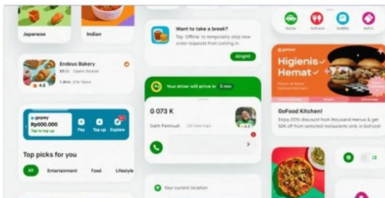

PROJECT CCTV
PT JAVA CREATIOX
melaksanakan pengerjaan Pemasangan Access Point Router di perusahaan greenLand surabaya dengan 2 sesi.

PROJECT DESIGNER UI/UX
PT JAVA CREATIOX
melaksanakan pengerjaan dalam pembuatan website aplikasi, kami menciptakan antarmuka dan pengalaman pengguna yang intuitif untuk Customer.
WEB DEVELOPER
PT JAVA CREATIOX
memiliki beberapa web developer yang handal, Mereka bertanggung jawab menciptakan, mengembangkan, dan memelihara aplikasi web yang fungsional dan menarik untuk Customer.